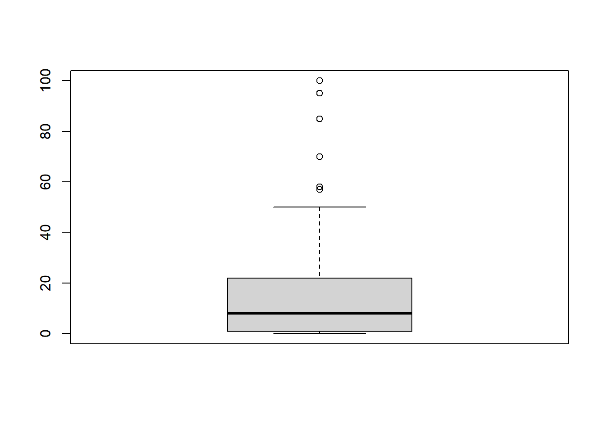

Capítol 3 Llista de Deures
3.1 Deure 1
En el link https://griu.github.io/meacp_2021/data/dataXY.dat hi han les dues variables ESPVIDA i CALORIES del fitxer PAISOS.SAV (són l’esperança de vida y les calories per habitant en diferents paisos del mon). Feu:
Utiliza el program (Excel, SPSS o R) que coneguis. La lectura de les dades amb R seria
dataXY<-read.table('https://griu.github.io/meacp_2021/data/dataXY.dat', header=TRUE, dec=",", sep=";")- Una descripció breu univariant de cada una de les variables;
summary(dataXY)## CALORIES ESPVIDA
## Min. :1505 Min. :39.00
## 1st Qu.:2248 1st Qu.:55.77
## Median :2614 Median :67.55
## Mean :2661 Mean :64.57
## 3rd Qu.:3166 3rd Qu.:72.88
## Max. :3947 Max. :79.50- Un diagrama de dispersió de ESPVIDA vs CALORIES. Comenta si s’observa o no associació entre aquests dues variables.
library(ggplot2)
ggplot(dataXY, aes(x=CALORIES, y=ESPVIDA)) +
geom_point()
- Comenta si la associació observada justifica o no parlar de causalitat.
NOTA: Descarrega la plantilla de solució deure 1 en Rmd.
3.2 Deure 2
Considera les dades a PAISOS.SAV, lectura de dades en R:
library(foreign)
data <- read.spss("https://griu.github.io/meacp_2021/data/PAISOS.SAV", use.value.labels = TRUE, to.data.frame = TRUE, use.missings =TRUE)- Quins són els països que tenen menys de 47 anys d’esperança de vida? Quants països tenen menys d’un terç de la seva població alfabetitzada? I d’aquests, quants tenen un PIB per càpita superior a 1.000 dòlars?
- Quina és la mitjana del nombre de diaris que es llegeixen al món? Hi ha diferències en la lectura de diaris segons nivell de desenvolupament humà? Creus que a Espanya se’n llegeixen pocs? perquè?
- Quina és la mitjana d’habitants per metge? Quin és el valor d’aquesta mitjana en cada un dels tres nivells de desenvolupament humà en què s’han classificat els països? Hi ha diferències significatives entre elles?
- En relació al fitxer de dades PAISOS.SAV, tria una variable Y del teu interès i descriu la variació de la mateixa emprant un altre variable del fitxer de dades. En aquest procés, ajusta un model de regressió lineal simple entre la variable depenent i la variable explicativa, descriu els resultats de la regressió lineal simple, i comprova que la hipòtesi de linealitat es plausible en aquestes dades. Si veus que la linealitat no es plausible, efectua la corresponent transformació prèvia de les variables. Recull els residus, I fes un gràfic dels residus vs. la variable depenent ajustada.
- Fes un breu resum de les conclusions que creus que es desprenen de la teva anàlisi. Explica també les limitacions de l’anàlisi.